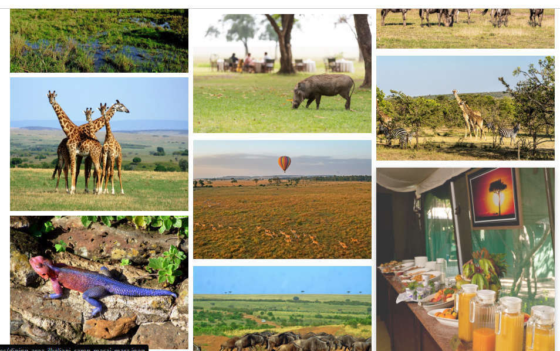

About Maasai Mara
The Maasai Mara is a renowned safari destination in Kenya, famous for its stunning landscapes, rich wildlife, and the Great Migration. It offers an unforgettable experience of nature's beauty and cultural heritage.

What to See?
Witness the Big Five (lion, leopard, rhino, elephant, and buffalo) along with wildebeest migrations and breathtaking sunsets.
Where?
Located in the southwest of Kenya, bordering Tanzania's Serengeti National Park.
Best Time to Visit?
July to October during the Great Migration, or year-round for spectacular wildlife viewing.